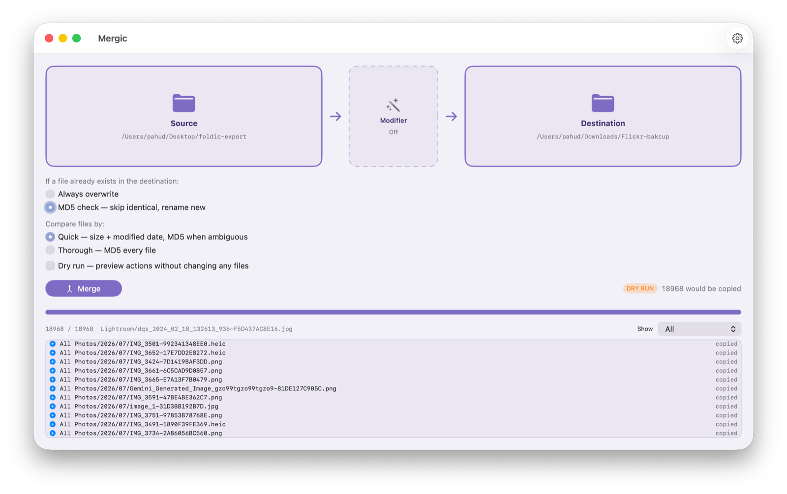
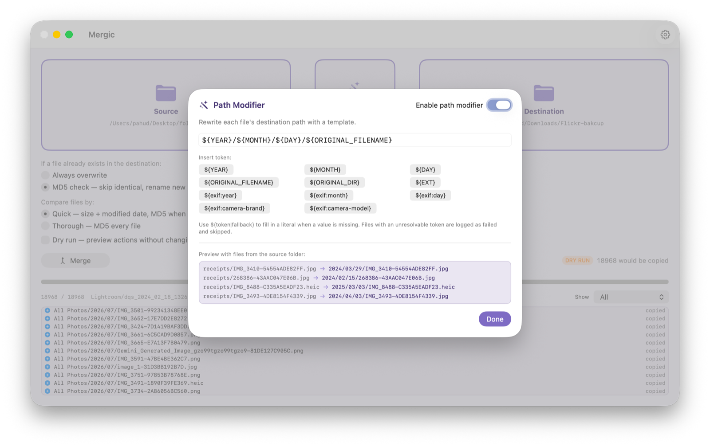

Merging one folder into another looks trivially simple. It is also, quietly, everyone's nightmare.
When you have to fold several directories together, what is your strategy? ⌘C, ⌘V, overwrite and hope? Or keep an extra copy of everything "just in case," and end up with a disk full of duplicates you will never dare to delete? Mergic exists because "copy" is only solved when you can say precisely what happens on a conflict — how a conflict is even detected, and what "the same file" actually means.
Copying is a pipeline
Once conflicts are handled, a folder merge stops being one action and becomes stages: read from the source, decide what happens on a collision, write to the destination. And the moment you draw it as a pipeline, an obvious question appears: why can't something sit in the middle and transform each file in flight — starting with where it lands?
That middle stage is the new modifier. It is a node on the canvas now, between Source and Destination, exactly where it lives conceptually.

The SD card, finally
The scenario that made me build this: a camera's SD card — or an entire portable SSD — plugged into the Mac. Source is the card. Destination is your disk or NAS. In between, the simplest possible template:
${YEAR}/${MONTH}/${DAY}/${ORIGINAL_FILENAME}
Run it, and everything you just shot files itself away by capture date — ${YEAR} reads EXIF DateTimeOriginal when the file has one, falling back to the file's own dates when it doesn't. Add ${exif:camera-brand} or ${exif:camera-model} and the shots from two cameras sort themselves into separate folders on the way through. Everything lands where it belongs, automatically. It is extremely satisfying to watch.
The editor previews the template against real files from your source folder as you type, so you see actual paths — not documentation — before anything runs.

When a token cannot be resolved
A text file has no camera brand. What then? That call belongs to you, per token: ${exif:camera-brand|Unknown} sends brandless files to Unknown/; ${exif:camera-brand|} collapses the folder level entirely. And if you give no fallback at all, the file is logged as failed and skipped — Mergic will not silently guess a location for your data. An organizer that scatters files by guessing is worse than no organizer.
Conflicts do not change
The modifier decides where a file lands. The conflict strategy still decides what happens if something is already there — and it is untouched. In MD5 mode the destination never loses a file: identical content is skipped, different content arrives as name-2.ext, and re-running the same merge stays idempotent.
That separation matters more than it looks, because a modifier makes many-to-one mappings possible: two different IMG_0001.JPG from two cards can now compute the same destination path. The existing machinery resolves exactly that case — hash check, then rename — with no new rules to learn. And dry run shows every source → computed path before a single byte moves.
If you speak AWS
If you are an AWS person, you have seen this shape before: Kinesis Data Firehose lets a Lambda function transform each batch in flight, between the producer and the delivery destination. A declarative transform stage between a source and a sink, with an explicit failure policy. That shape has existed in data engineering for a decade — I just had not seen anyone put it in a folder-merge app, even though the need is as old as DCIM/100CANON.
Well then: nobody made it, so I did. Scratching my own itch first.
The modifier ships with the next Mergic update. The engine behind it is pure, UI-free Swift with a test suite covering template parsing, per-token fallbacks, many-to-one collisions, idempotent re-runs, and EXIF extraction from real files. Custom tokens and hooks are on the list.
폴더를 다른 폴더로 병합하기 — 보기에는 너무나 간단합니다. 그리고 조용히, 모두의 악몽이기도 합니다.
여러 디렉터리를 하나로 합쳐야 할 때, 당신의 전략은 무엇인가요? ⌘C, ⌘V로 덮어쓰고 기도하기? 아니면 '혹시 몰라서' 전부 복사본을 남겨 두고, 평생 지우지 못할 중복 파일로 디스크를 채우기? Mergic이 존재하는 이유는, '복사'라는 일이 충돌 시 무슨 일이 일어나는지 정확히 말할 수 있어야 비로소 해결되기 때문입니다 — 무엇을 충돌로 판정하는지, '같은 파일'이란 대체 무슨 뜻인지까지.
복사는 파이프라인이다
충돌 처리가 끝나면 폴더 병합은 하나의 동작이 아니라 단계들이 됩니다. 원본에서 읽고, 충돌 시 판단하고, 대상에 씁니다. 그리고 파이프라인으로 그리는 순간 당연한 질문이 떠오릅니다. 왜 중간에 무언가를 두고, 비행 중(in-flight)인 각 파일을 변환할 수 없는가 — 우선은, 어디에 착지할지부터.
그 중간 단계가 새로운 모디파이어입니다. 이제 캔버스 위의 노드로, 원본과 대상 사이에 자리잡고 있습니다. 개념상 원래 있어야 할 바로 그 자리에.
SD 카드, 드디어
이 기능을 만들게 한 시나리오: 촬영을 마친 카메라 SD 카드 — 혹은 휴대용 SSD 통째로 — 를 Mac에 꽂습니다. Source는 카드, Destination은 디스크나 NAS. 그 사이에 가장 단순한 템플릿 하나:
${YEAR}/${MONTH}/${DAY}/${ORIGINAL_FILENAME}
실행하면 방금 찍은 것들이 촬영 날짜별로 알아서 정리됩니다 — ${YEAR}는 EXIF의 DateTimeOriginal을 우선 읽고, 없으면 파일 자체의 날짜로 물러납니다. ${exif:camera-brand}나 ${exif:camera-model}을 더하면 두 대의 카메라로 찍은 사진이 비행 중에 서로 다른 폴더로 분류됩니다. 모든 것이 자동으로 제자리를 찾아갑니다. 지켜보고 있으면 정말 기분이 좋습니다.
편집기는 원본 폴더의 실제 파일로 템플릿을 라이브 프리뷰합니다. 문서를 보고 추측하는 게 아니라, 입력하는 동안 실제로 만들어질 경로를 확인합니다.
토큰을 해석할 수 없을 때
텍스트 파일에는 카메라 브랜드가 없습니다. 그러면? 그 결정은 당신 몫이고, 토큰 단위로 정할 수 있습니다. ${exif:camera-brand|Unknown}이면 브랜드 없는 파일은 Unknown/으로, ${exif:camera-brand|}이면 그 폴더 계층 자체가 접힙니다. 폴백을 아예 주지 않으면 그 파일은 실패로 기록되고 건너뜁니다 — Mergic은 당신의 데이터가 갈 곳을 멋대로 추측하지 않습니다. 추측으로 파일을 흩어 놓는 정리 도구는 정리 도구가 없는 것보다 무섭습니다.
충돌 처리는 한 글자도 바뀌지 않는다
모디파이어는 파일이 어디에 착지할지를 정합니다. 이미 무언가 있을 때 무슨 일이 일어날지는 여전히 충돌 전략이 정합니다 — 그리고 그 부분은 손대지 않았습니다. MD5 모드에서 대상 폴더는 결코 파일을 잃지 않습니다. 내용이 같으면 건너뛰고, 다르면 name-2.ext로 착지하며, 같은 병합을 다시 실행해도 결과는 그대로입니다.
이 분리는 보기보다 중요합니다. 모디파이어는 '다대일' 매핑을 가능하게 하니까요. 두 장의 카드에 든 서로 다른 IMG_0001.JPG가 이제 같은 대상 경로를 계산해 낼 수 있습니다. 그것을 해결하는 게 바로 기존 메커니즘 — 해시 비교, 그리고 이름 변경 — 이고, 새로 배울 규칙은 없습니다. 드라이 런은 단 1바이트도 움직이기 전에 모든 원본 → 계산된 경로를 펼쳐 보여줍니다.
AWS를 할 줄 안다면
AWS에 익숙하다면 이 모양을 본 적이 있을 겁니다. Kinesis Data Firehose는 Lambda 함수로 각 배치를 비행 중에 변환할 수 있습니다. 생산자와 전달 대상 사이에 놓인, 명시적 실패 정책을 가진 선언적 변환 단계. 이 모양은 데이터 엔지니어링에 십 년 전부터 있었는데, 폴더 병합 앱에 넣은 사람은 보지 못했습니다. DCIM/100CANON만큼이나 오래된 필요인데도요.
좋습니다. 아무도 안 만들면 내가 만듭니다. 우선 내 가려운 곳부터.
모디파이어는 Mergic의 다음 업데이트와 함께 출시됩니다. 그 뒤의 엔진은 순수한 UI 없는 Swift로, 템플릿 파싱, 토큰별 폴백, 다대일 충돌, 멱등 재실행, 실제 파일에서의 EXIF 추출까지 테스트가 갖춰져 있습니다. 커스텀 토큰과 훅은 목록에 올라 있습니다.